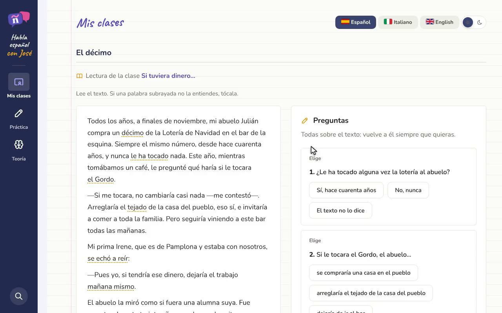

¡Hola!
Tus clases de español no se quedan en la videollamada.
Clases particulares a tu medida, y una web que sale de cada una de ellas.
Así es por dentro, con una alumna inventada.
Lo mejor de una plataforma online, con la conversación de un profesor nativo.

Una plataforma
Tus clases, ejercicios que se corrigen solos, lecturas y cursos, siempre a mano: en el ordenador o en el móvil.

Un profesor nativo
Hablamos de verdad, resuelvo tus dudas y te enseño a hablar: nada de teoría aburrida.
Quién soy y qué dicen mis alumnos¿Cómo funciona?
La clase, por videollamada
-
Reserva una clase
Eliges día y hora en mi calendario y, al entrar, la encuentras preparada en tu sección, con su fecha.
-
Entra en clase
La clase es por videollamada: entras desde tu sección con un clic. Hablamos, exploramos y resuelvo tus dudas en el momento.
-
Teoría a tu medida
Te explico lo que necesitas, no al viejo estilo, con tu idioma como apoyo, y hacemos juntos unos pocos ejercicios guiados para ponerlo a prueba.
-
Toma notas
Siempre a tu disposición, junto a cada clase: se guardan solas y hasta puedes descargarlas.
Cuando termina la clase…
-
Practica tu clase
Encuentras ejercicios sobre lo que hemos visto. ¿Quieres más? Generas otra tanda.
-
Lee
Un texto escrito para tu clase, con sus preguntas. Los ejercicios y la lectura los vemos juntos en la clase siguiente.
Y en tu móvil
-
Cinco minutos
Entre clase y clase, ejercicios al azar de todas tus clases. ¿Te quedas con ganas? Otra tanda. Sin presiones, sin premios por rachas, sin agobios: a tu ritmo.
Y además…
-
Ponte a prueba
Para los más curiosos, sin presiones ni rachas: un montón de ejercicios por nivel, por tema de teoría o por temática.
-
Repasa la teoría
Sin prisas: léela a tu ritmo, cuando quieras, desde la web o desde el móvil.
¡Pruébalo gratis!
Si tuviera dinero… · B1–B2Una clase entera, sin registrarte y tal cual la ve un alumno: la explicación, los ejercicios y la lectura «El décimo».

¿Empezamos?
Reserva tu primera clase y se abre todo: tus clases, todos los ejercicios y toda la teoría.
¿Ya eres alumno? Entra en tu cuaderno →